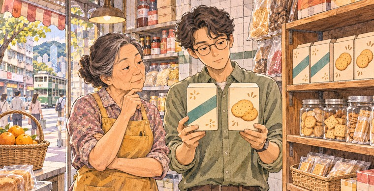

MKT-08 · 香港 · 10–15 分钟 · 市场营销 · 包装设计 · 品牌识别
换了新包装，老顾客还找得到吗？

新闻背景 · 熟悉的品牌换包装
Deuce Studio 在 2025 年 11 月 12 日发布的文章中，介绍为总部位于香港的李锦记设计英国辣酱系列包装的项目。新图案保留了熟悉的金色品牌标牌及传统纹样。
这是设计公司对设计取向的说明，不能证明销售增加，也不代表产品当天在香港推出。下文的饼干品牌、设计及测试均属虚构。
课堂决策
虚构课堂情境。 一家香港独立饼干品牌要决定下一批印哪款包装。原来那道斜向蓝绿色条纹和品牌名称的位置，顾客早已认得。不过，包装正面信息较多，口味说明不够显眼。
A 沿用旧设计。新版 B 给口味说明更多空间，让信息主次更清楚，却拿掉蓝绿色条纹，也把品牌名换了位置。店主想让口味更容易辨认，也希望熟客仍能在货架上找到品牌。
饼干、分量、售价、材料、印刷成本及供货不变。两款均符合安全及必要信息要求，也能在截止日期前完成。旧包装存货照常出售，不涉及弃置决策。
| 下一批的包装方案 | 保留与改动之处 |
|---|
| A · 沿用现有包装 | 保留熟悉的条纹及品牌名位置；正面较繁复，口味说明不太显眼 |
| B · 印制新包装 | 口味信息主次更清楚、留白更多；拿掉条纹，移动品牌名 |
目前还没有顾客测试。沿用包装能保留熟悉感；单看新版样稿，信息则更清晰。两款各有可取之处。
你的决定下一批你会保留 A，还是印 B？哪项顾客任务最重要？有什么证据会令你推翻暂定选择？
第 2 轮 · 条件有变
设计师提出可行的 C 款：保留 A 的蓝绿色条纹和品牌名位置，同时采用 B 较清楚的口味信息层次。成本、物料、必要信息和时间安排不变。
一场小型样品测试招募了 120 名熟悉品牌的成年志愿者，随机把他们分成三组，每组 40 人，各只看一款包装。模拟货架和竞争产品相同，目标商品均衡地轮换位置。用中性指示，不给提示，也不预先展示。每人先尝试在 10 秒内找到指定品牌。
接着， 每组全部 40 人 都单独看自己获分配的包装并辨认口味，包括先前在货架上找不到品牌的人。这是两项独立任务，不是两批买家。
| 正确完成任务 | A | B | C |
|---|
| 10 秒内找到品牌 | 40 人中有 36 人 | 40 人中有 26 人 | 40 人中有 35 人 |
| 单看包装时辨认口味 | 40 人中有 22 人 | 40 人中有 34 人 | 40 人中有 32 人 |
没有人实际购买。这些虚构人数只描述一次小型测试，不是整体顾客的成功率，也不能预测销售。
你的决定现在你会为下一批选哪一款？说明 C 保留和改善了什么，并指出一项在真实店铺观察到、会令你改判的迹象。
分清顾客要做的两件事
在一排商品中找到熟悉的品牌，和拿着包装看出是什么口味，是两项任务。新设计可以让第二项更简单，却令第一项更难。
在这次测试，A 组找到品牌的人数较 B 组多，B 组答对口味的人数则较多。只看表中一行，便漏了店主目标的另一半。
可行的折衷，并非样样领先
C 保留熟悉的识别线索，口味信息也较清楚。与 A 组相比，C 组多 10 人答对口味，少 1 人找到品牌；与 B 组相比，C 组多 9 人找到品牌，少 2 人答对口味。
兼顾店主的两个目标时，C 是合理选择，但不是在两项任务中都录得最高人数。35 和 36、32 和 34 的差距很小，不能只凭人数不同便认为整体客群也确有差别。
若最重视品牌识别风险，保留 A 仍可辩护。若选 B，便要说明为何即使货架识别结果较弱，清楚标示口味仍应获较大权重。要解释取舍，不要宣称改版一律有利，或熟悉的设计永远不能碰。
任务结果不是销售预测
随机分组让比较更有参考价值，却不会令志愿者代表所有买家。他们本来就熟悉品牌，货架是模拟的，也没有人花钱购买。
每款的两行数据来自同一批 40 人，不能加成 80 人；找不到品牌也不等于少了一个销售。另外，这场测试不能把蓝绿色条纹的影响，与品牌名称位置及其他版面改动分开。
结果可作为选择设计并在实际环境测试的依据，却不保证销售增加，也不能证明是哪个视觉元素造成差异。
选定后，在实际店铺继续观察
下一批要继续留意两项目标：顾客能否找到品牌，又能否辨认想买的口味。记录求助情形、拿错口味，以及不同实体店货架陈列下的表现。
保留旧包装样稿以作比较，并把实际购买、售价、促销、存货及陈列改动一并检视。销售升跌本身无法说明改版造成了什么。必要信息和产品保护都不可妥协。
教师提示
先请同学在 A、B 中暂选其一，再公布 C 和测试结果。要求他们同时就两项顾客任务说明选择。新资料是一项做得到的设计改进，不是叫人无止境研究、迟迟不作决定。
各组随机分配，但志愿者本来已熟悉品牌。单独展示包装后，每个人都答口味题，所以分母不限于先前找到品牌的人。用人数已足够；如需百分比，两项任务分别为 A 90%／55%、B 65%／85%、C 87.5%／80%。
题目没有提供显著性检定、购买转化估算，也没有对整体客群作结论。案例讨论同一产品的识别和信息层次，不是开拓新客群，也不是联名合作品牌归因。通用可用性指引有助设计清楚的任务，但不能验证这项零售测试的样本或门槛。
第二轮
设计师提出可行的 C 款：保留 A 的蓝绿色条纹和品牌名位置，同时采用 B 较清楚的口味信息层次。成本、物料、必要信息和时间安排不变。
一场小型样品测试招募了 120 名熟悉品牌的成年志愿者，随机把他们分成三组，每组 40 人，各只看一款包装。模拟货架和竞争产品相同，目标商品均衡地轮换位置。用中性指示，不给提示，也不预先展示。每人先尝试在 10 秒内找到指定品牌。
接着， 每组全部 40 人 都单独看自己获分配的包装并辨认口味，包括先前在货架上找不到品牌的人。这是两项独立任务，不是两批买家。
| 正确完成任务 | A | B | C |
|---|
| 10 秒内找到品牌 | 40 人中有 36 人 | 40 人中有 26 人 | 40 人中有 35 人 |
| 单看包装时辨认口味 | 40 人中有 22 人 | 40 人中有 34 人 | 40 人中有 32 人 |
没有人实际购买。这些虚构人数只描述一次小型测试，不是整体顾客的成功率，也不能预测销售。
你的决定现在你会为下一批选哪一款？说明 C 保留和改善了什么，并指出一项在真实店铺观察到、会令你改判的迹象。